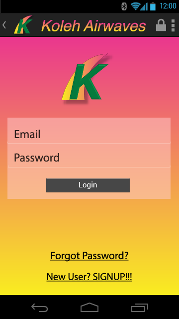
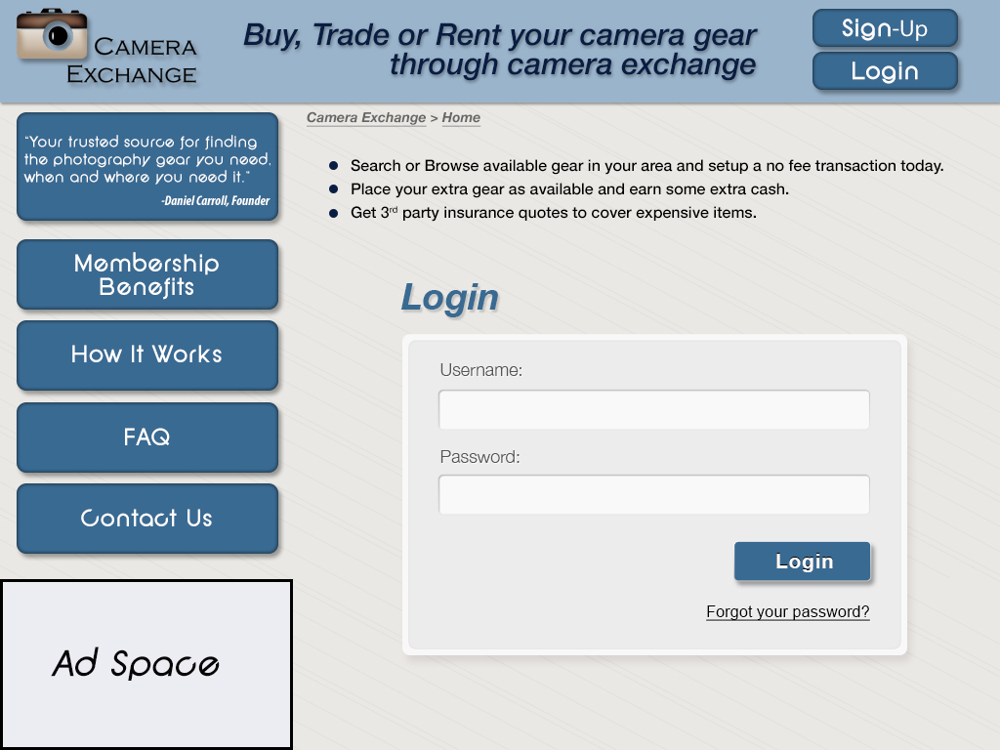

Presented on Reveal.js
They are the most useful way to collect information from your user.
They should be designed to be idiot proof.
It literally allows you to "float" labels above your input fields.
With more and more users conducting a higher percentage of their online activities with their mobile device, we face the challenge of cramming as much relevant information as possible into as small of a place as possible without the overall design becoming cluttered or confusing.
This...
...or this?
The answer is at the developers website!
This links JQuery and the floatlabel specific scripts
<script src="js/jquery.js"></script>
<script src="js/jquery.FloatLabel.js"></script>
This links a CSS reset and the floatlabel specific css properties
<link rel="stylesheet" href="css/normalize.css">
<link rel="stylesheet" href="css/jquery.FloatLabel.css">
<link rel="stylesheet" href="css/main.css">
<script>
$('.js-float-label-wrapper').FloatLabel();
</script>wrapping the group in a <div> with a class of "js-float-label-wrapper".
(function( $ ){
$.fn.FloatLabel = function( options ){
var defaults = {
populatedClass : 'populated',
focusedClass : 'focused'
},
settings = $.extend({}, defaults, options);
return this.each(function(){
var element = $(this),
label = element.find('label'),
input = element.find('textarea, input');
if( input.val() == '' ) {
input.val( label.text() );
} else {
element.addClass( settings.populatedClass );
}
input.on( 'focus', function(){
element.addClass( settings.focusedClass );
if( input.val() === label.text() ){
input.val('');
} else {
element.addClass( settings.populatedClass );
}
});
input.on( 'blur', function(){
element.removeClass( settings.focusedClass );
if( !input.val() ){
input.val( label.text() );
element.removeClass( settings.populatedClass );
}
});
input.on( 'keyup', function(){
element.addClass( settings.populatedClass );
});
});
};
})( jQuery );